VENDRS
Helping emerging small businesses discover their next market
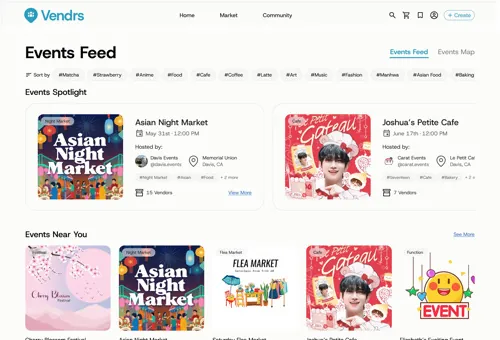
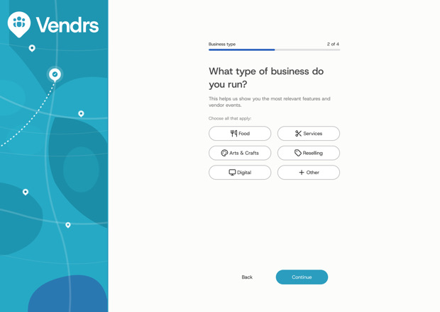
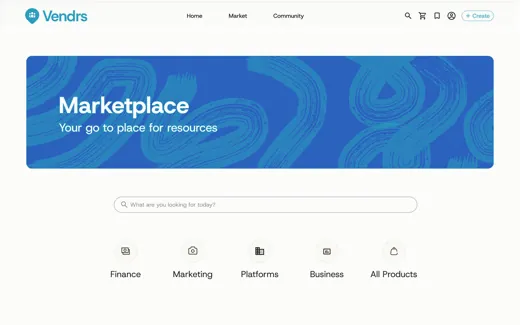
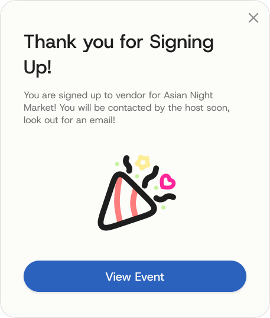
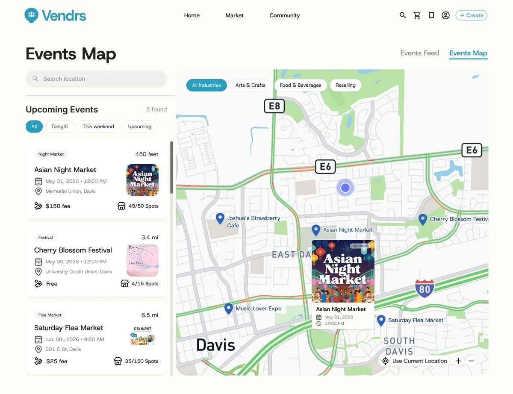
Case studyStarting a business can be exciting but scary
Starting a small business is an exciting but overwhelming endeavor, aspiring entrepreneurs often don't know where to begin when it comes to finding reliable suppliers, managing inventory, and handling the operational side of running a business. Without guidance or the right tools, the early stages can feel scattered and discouraging, making it hard to gain momentum.
My team and I were challenged with creating a product that can help these emerging small businesses scale in an 8 week sprint.
My contributions
- Designed onboarding, from research to final design
- Designed the Events Map, from research to final design
- Helped drive the feature prioritization list to keep the team on track for our 8 week timeline
Many emerging small businesses want to scale, but lack the resources, staff, and opportunity to do so
Running a small business means juggling operations, finances, and growth all at once. This can be difficult especially if you have no centralized support. Many owners struggle to scale because they lack the staff, customers, and internal knowledge needed to grow.
The problem statement:
How might we help emerging small business owners operate their businesses, share resources, and expand their customer reach through an accessible and intuitive platform?
Vendrs brings discovery, resources, and operations into one platform
I helped build a platform for emerging small business owners that brings operations, discovery, and community into one place, instead of the group chats, spreadsheets, and missed opportunities from before.
Main Features
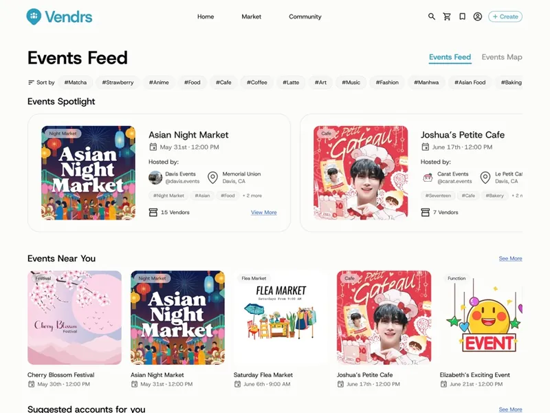
Community
A feed for discovering, applying to local vending opportunities, and to connect with other emerging businesses.
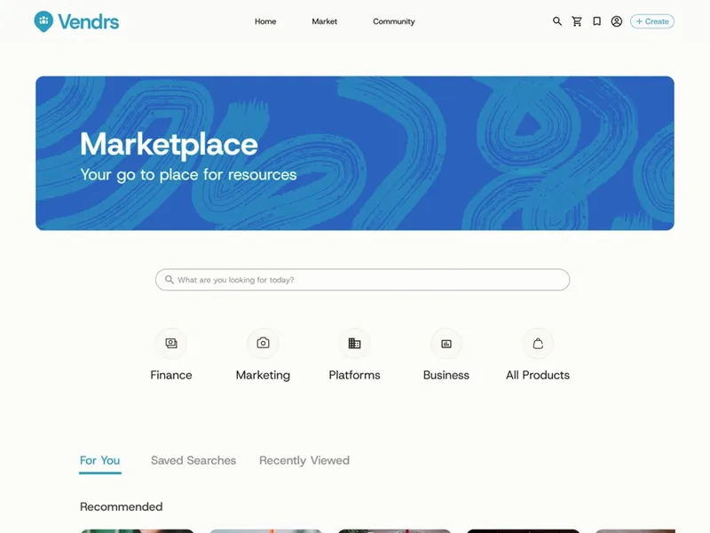
Marketplace
Business resources in one place: Excel templates, operational guides, and the tools owners need to run things.
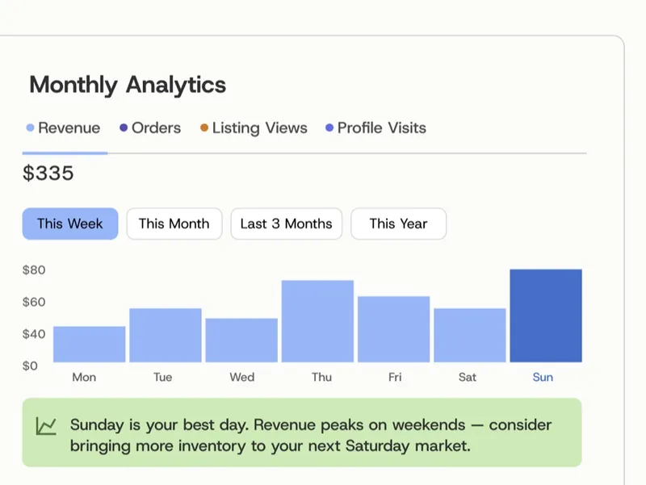
Dashboard
Finances and business performance, tracked in one view.
They didn't lack ambition. They lacked infrastructure.
20+ survey responses showed how common each problem was, 10 interviews with UC Davis market vendors showed why it mattered, and secondary research on street events confirmed discovery was worth solving.
Some insights:
Key Findings
Discovery ran on luck. Even established sellers found markets through word of mouth and flyers, with nothing built for it.
Everyone rebuilt the basics. Newer owners had no templates or guides to start from, so they worked out the operational side alone.
Growth was hard to manage solo. Owners needed to track performance and run things efficiently without hiring extra help.
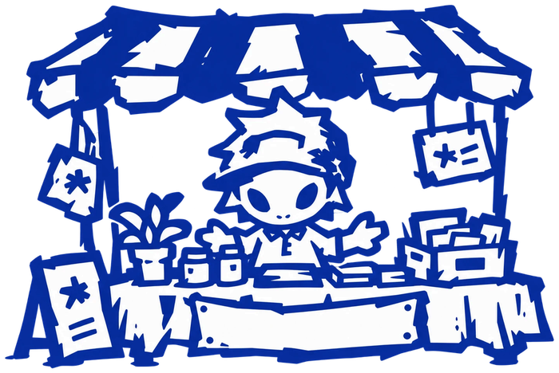
Vending works
I conducted secondary research on open street events and found that businesses that took part saw real gains in traffic and revenue. Vending could help owners reach more customers.
We were too ambitious.
The team was ambitious, but an eight week timeline meant one main focus, not ten half-built ones. I made sure that our priorities were set on features that targeted our scope the best.
The biggest cut I made was a customer-facing flow I'd floated early on. No research justified it, and the timeline couldn't absorb a fourth surface.
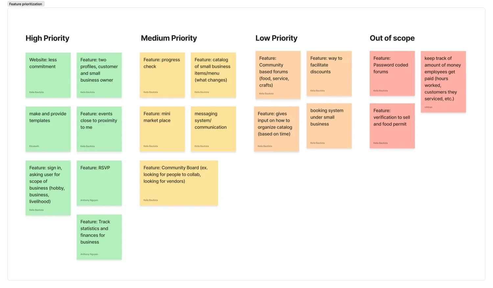
Quick and simple setup
No one likes a long setup so I intentionally made it short and efficient for users to get right into the platform.
Key Frames
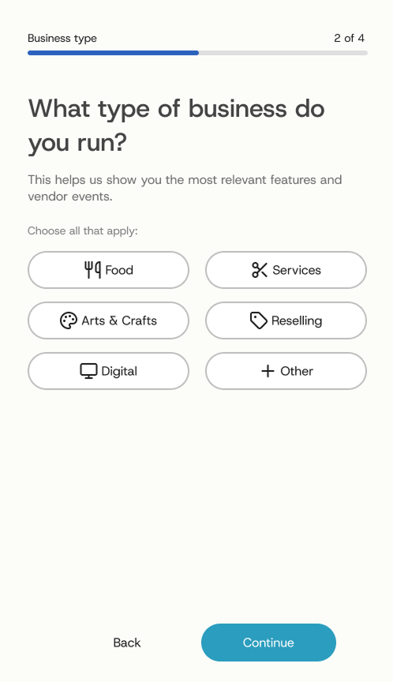
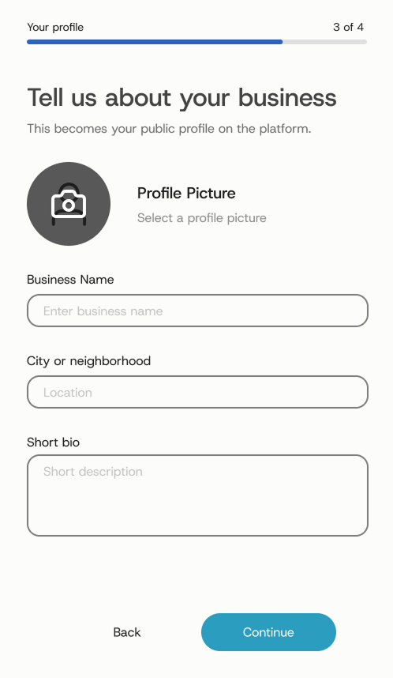
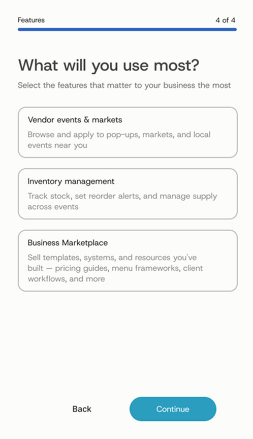
The main focus of these screens is to set up your business profile so you can connect with others. I wanted every account labeled with its business, so users can easily see what others do and where they are based. Knowing which features each user chooses also gives data on what different kinds of businesses value most.
Discovery you can see, sorted by what you can reach
I designed the Events Map to give owners a visual way to search for nearby events. Pins show what is around you, a side panel lists the same events for scanning, and filters sort out the events that match your interest.
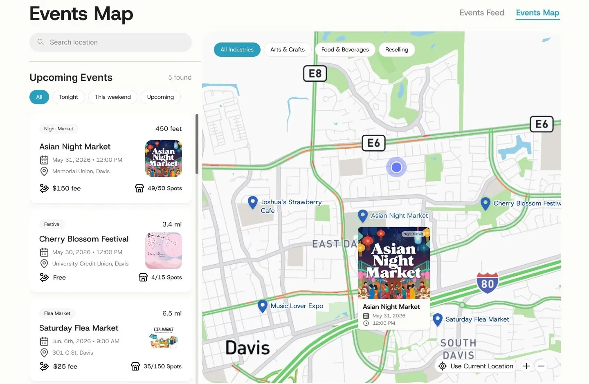
Designing for Familiarity
Jakob's Law says users expect new products to work like the ones they already use, so I kept the same structure as other platforms like Google Maps and Apple Maps: pins, search placement, filter chips, a current-location button. Nothing needed an explanation.
What business owners care about
Google Maps and Apple Maps are built to answer where should I go. Vendrs needed to answer a different question: is this worth applying to. Testing showed vendors kept searching the card for two things it didn't have, the fee to apply and how many spots were already taken. Popular events fill fast, and applying just to learn it's full wastes time. I added both directly to the card.
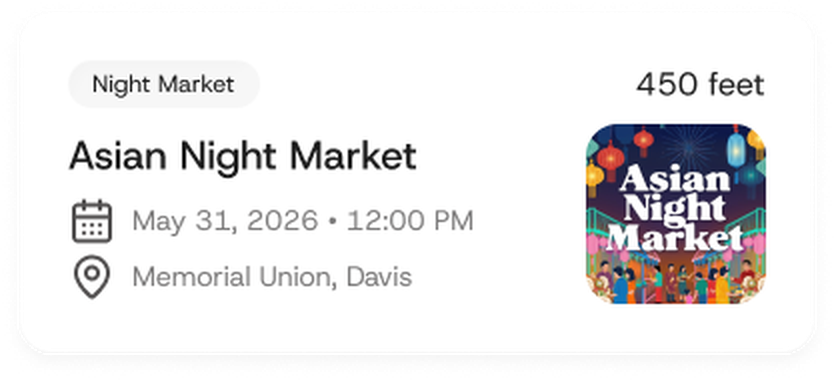
- Copied what a map app would show
- No fee shown
- No spots-left shown
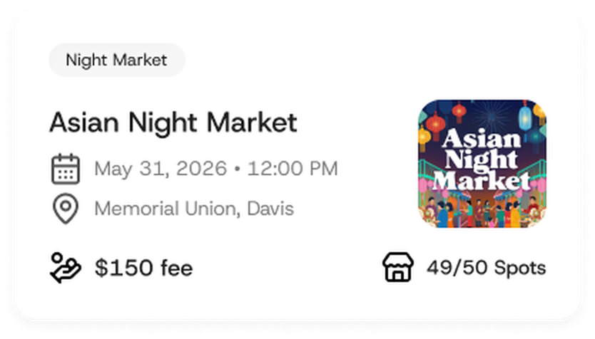
- Fee visible at a glance
- Spots remaining visible at a glance
- Easy to skip what isn't worth it
Pins that say more
Testing showed that a pin only revealed its name when you hovered over it, and many people clicked into an event just to check the date and time. Now every pin shows its name, and hovering one opens a card with the image, date and time, so you can scan the map and get what you need without an extra click.
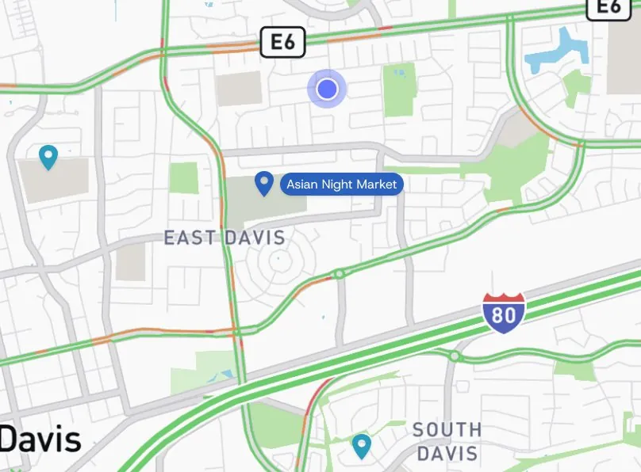
- Names only showed on hover
- Date and time took a click
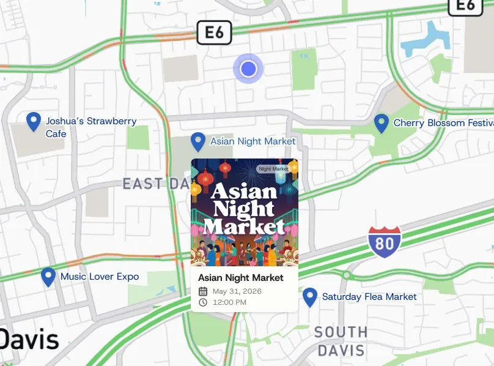
- All names visible at once
- Card with date and time on hover
What I learned
- Don't ideate too soon. It's easy to get lost in ideas, and research can disprove many of the ones made before it.
- Remember the main objective. It's important not to lose sight of what the project is actually for.
What I'd do differently
Looking back, and from the industry feedback we got, Vendrs would have been stronger with one strong main emphasis instead of three. It should have been discovery, because that is where the research pointed. Building Community, Marketplace and Dashboard side by side spread us thin, and a jack of all trades is a master of none.
We also built our identity around the idea of vendors, but most of our ideas weren't chosen to support it.
If I had more time
- Messaging between owners. Let sellers connect directly, form groups by business type, and answer questions newer owners have.
- A customer-facing side. A secondary user type would help owners reach buyers directly, driving traffic back to vendor events and building the customer base research said they needed. Research also showed that many owners run online shops, so it would be another way to drive more traffic to an online business.
Presenting Vendrs to a panel of industry judges
We closed the sprint by presenting the final product to a panel of industry judges: Chris Ota (Staff Product Designer, LinkedIn), Ken Skistimas (Director of UX, ServiceNow), and Aditi Jain (UI Designer, Computrition).
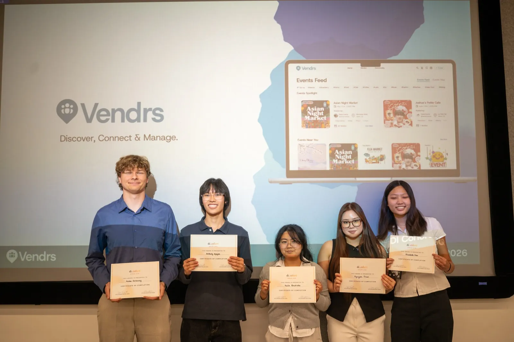
Thank you to our judges, to our industry mentor Laura Yien, and to Design Interactive for the opportunity.